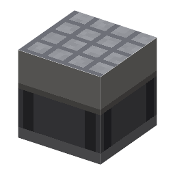

説明
①子ども ゴムの上に重い定盤をのせた台。まわりで動物が歩いても、上の物はほとんど揺れない。
②学生 定盤＋加硫ゴム。上に置いた物の揺れが 1/20 になる。干渉計で水銀灯を測るとき、近くで動物やトロッコが動いたりピストンが動いたりすると縞がゆれる。水銀灯を除振台にのせると落ち着く。
③大人 精密な測定は、足音や車の振動（µm ほど）と温度で狂う。重い台をばねで浮かせると、細かい揺れが伝わりにくい。長さを測る標準の温度は 20℃（1931年に国際度量衡委員会が決めた）。鋼は 1℃で 1m あたり約 11µm 伸びる。
④ガチ 今の露光装置は、空気ばねで浮かせ、揺れを打ち消すように動く「アクティブ除振」の上に置かれ、部屋の温度は 0.01℃ 単位でそろえる。精密な工場は、トラックが通るだけで仕事が止まる。
作り方
使い道
（このアイテムを使うレシピは無い）